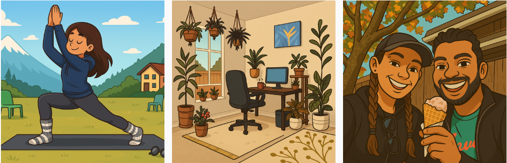

Brief Introduction
My name is Puneet Pawar. I live in Sacramento, California and I am on a quest to find answers and solve problems using data, just because it's fun! :).
Self-driven Leaving my decade long career as a Product Development Engineer to pursue my interest in Data Science took a lot of courage and planning. I did it and I realized that I am pretty good at doing new things (thanks to all the SCRUM meetings for years - painful but teaches effective planning and execution :D). So, next stop - Excellence in Data Science.
Meticulous I enjoy diving into the fine print and I savor it with curiosity. I am that person who doesn't buy anything without first scanning the product label to see the ingredients list and making sure I understand how good or bad it is.
Optimizer I love optimizing and organizing. I optimize learning new things by accompanying it with small hands-on projects. And my husband and I have optimized our cooking to the point that we can make a fairly complex meals from scrach in 40min and we don't have leftovers since COVID. All the ingredients and their quantities of our favorite recipes are organized in a tables and lists. It helps us make the exact quantity we want without any wastage.
Nonconformist I am almost non-existent on social media. My best friend persuaded me to create an Instagram account so that I can see her updates. I am ok with being the only one on the planet doing or not doing something.
Minimalist "Do we *need* this?" is my favorite question whenever my husband and I find something really pretty and tempting. It works well as a filter. And on rare occasions, even when the answer is 'no', we still end up buying it just because we absolutely love it :P, which is usually followed by donating the similar thing we already have. Decluttering is my other favorite thing!
I live with my lovely husband and our plants. I love yoga, backpacking, camping and pretty much anything that brings me close to nature.

Trajectory
Born with a love for mathematics, inherited from my dad. Some of my favorite childhood memories with him are waking up at 4am to work on math problems.
I was about 10 years old, when I got inspired by my older cousin to pursue Engineering. So after completing high school, I ended up pursuing Bachelor's degree in Electronics and Communication Engineering.
I wanted to learn more about how things work, so I pursued a Master's degree in Embedded Electrical and Computer Systems with a focus on VLSI Design.
After my Master's, I worked as a Product Development Engineer for 10 years, where I designed and developed products for the semiconductor industry. I was involved in all aspects of product development, from concept to production.
During my time as a Product Development Engineer, data analysis became an integral part of my work. I used data to make informed decisions, optimize processes, and improve product performance. This experience sparked my interest in data science and analytics.
In 2024, I decided to transition into a data-focused role and enrolled in data science and machine learning bootcamps to formalize my skills. I am excited to leverage my engineering background and data analysis experience in this new chapter of my career.
Other Fun Stuff
I love solving puzzles for fun! Sometimes my husband and I challenge each other with riddles during our camping trips while enjoying the campfire.
I enjoy pattern recognition and spatial reasoning, one of the reasons why I find solving problems with data to be fun! It's like solving a puzzle, you put all the pieces together to reveal the bigger picture.